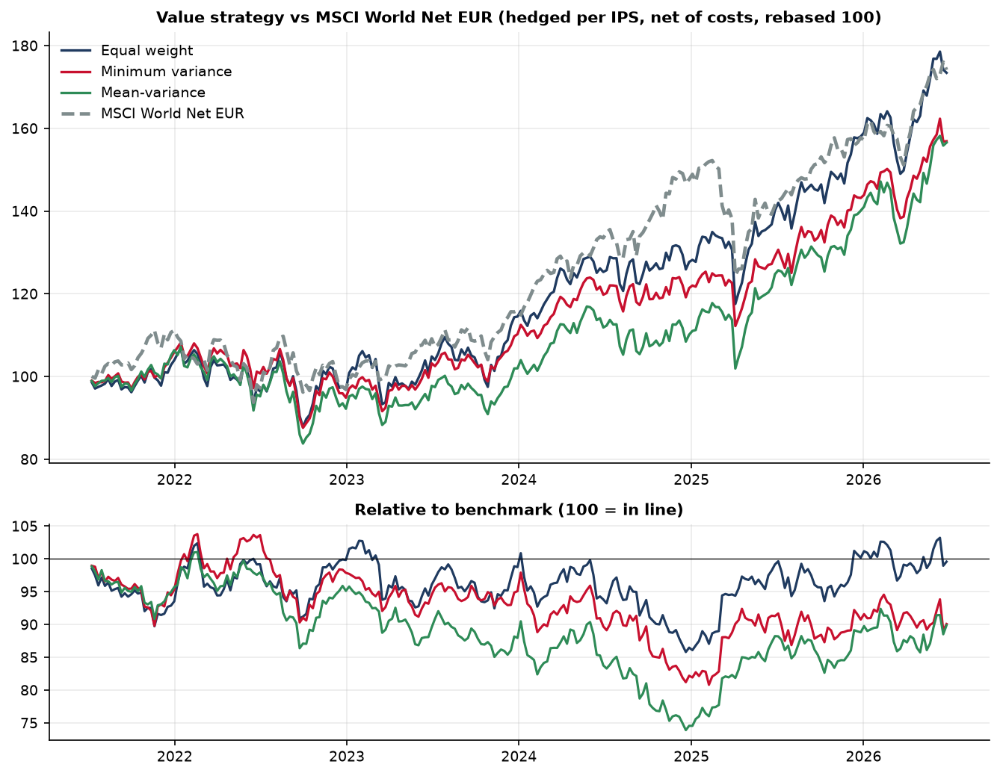
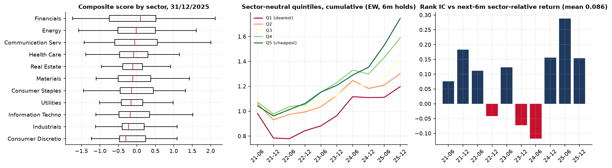
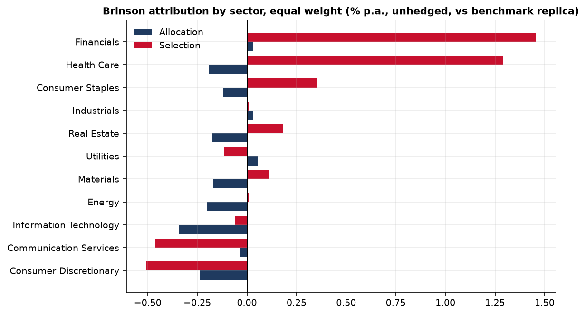
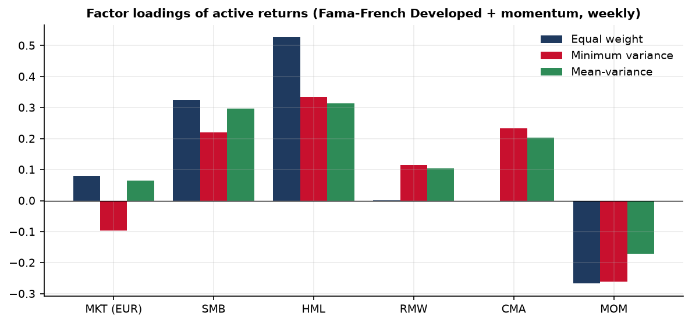

Systematic Value — Developed Markets
Thesis
Cheap stocks, measured on several fundamentals and compared only with their sector peers, should outperform over a full cycle. The strategy harvests this premium with a transparent rules-based process, controls sector and country bets, and asks a precise construction question: does an optimiser beat simple equal weighting on the same ideas?
Method
| Step | Rule |
|---|---|
| Universe | Bloomberg World Large & Mid Cap, 24 developed countries, composition dated at each rebalance; free-float cap > €1bn, 3-month ADV > €5m; one line per issuer |
| Signal | EV/EBIT, P/B, FCF yield, EV/Sales as yields (banks/insurers: P/B, P/E); winsorised 1/99; z-scored within GICS sector; equal-weight composite |
| Accounting lag | A fiscal year is used only from year-end + 6 months, and never before its publication |
| Selection | 50 names maximising the total score in the cheapest sector quintile, under ±10-pt sector and country bands vs benchmark (exact integer programme); a buffer keeps holdings still in the top two quintiles |
| Weighting | Equal weight · minimum variance (Ledoit-Wolf, 250 weeks) · mean-variance; 0.5%-4% per name, long only |
| Rebalancing | Semi-annual, 10 dates from June 2021 to December 2025; trades at the first Friday after the decision date; 15 bp per trade |
| Currency | EUR base; currencies carried by ≥ 5 names are hedged with forwards |
| Benchmark | MSCI World Net Total Return EUR |
Results (2 Jul 2021 – 26 Jun 2026, net of costs and withholding tax, hedged)
| Ann. return | Active | Tracking error | Max drawdown | |
|---|---|---|---|---|
| Equal weight | 11.6% | −0.1% | 10.8% | −17.8% |
| Minimum variance | 9.4% | −2.3% | 10.5% | −19.1% |
| Mean-variance | 9.4% | −2.4% | 10.4% | −21.8% |
| MSCI World Net EUR | 11.7% | — | — | −18.2% |
Unhedged, equal weight returned 12.7% (+0.95%): the dollar hedge cost about 1% a year in rate differential.

The signal worked; the portfolio broke even. The cheapest sector-neutral quintile beat the dearest by about 8% a year (rank IC 0.09, t ≈ 2.1). Stock selection inside sectors added 2.3% a year, but sector allocation (no mega-cap growth in 2023-24) cost 1.4% and the hedge 0.8%.



Limits
- Five years, ten rebalances, one regime: no claim of statistically significant alpha.
- Bloomberg's index stands in for MSCI's (constituents not licensed); a replica built from security returns tracks MSCI World Net with 0.996 correlation.
- Current GICS sectors applied to history; no market impact in costs; idealised weekly hedge.
- Anti-momentum tilt (−0.27): the natural next step is a value + momentum + quality composite.
Documents
Journal
- 29 Oct 2026 — Data loaded, total returns validated against the benchmark; a dividend double count (~2%/yr) found and fixed.
- 29 Oct 2026 — Score, construction, backtest, attribution and robustness completed.
- 30 Oct 2026 — Score-tilted weighting tested (−0.2% active): equal weight kept as reference.